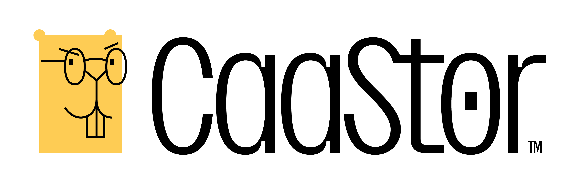
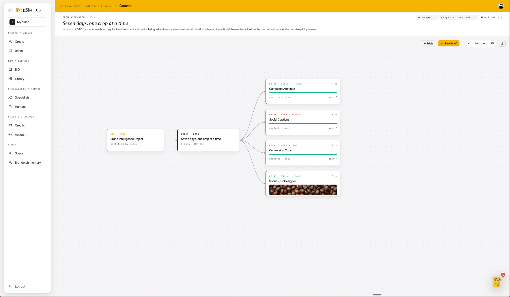

· Pitch iLab Madrid 2026
Big Ideas.
Brilliant Execution.
Zero Drama.
Convertimos cada empresa
en una marca.
Caastor es el estudio creativo as-a-service que ya factura. CaastorOS es el sistema operativo de marca que lo hará escalar.
La visión
Cada empresa merece una marca con alma.
Y poder producirla sin parar — sin perder el alma.
CaastorOS es el sistema operativo de la inteligencia de marca: convierte tu marca en algo vivo, certificado y consultable. Y cada pieza que produces deja de reinventarse desde cero.
El problema
Todos generan con IA. Casi nadie capta valor.
- 01
La marca no es un sistema.Vive en la cabeza del fundador, en un deck y en plantillas sueltas. No se puede consultar ni proteger.
- 02
La IA genérica produce ruido.ChatGPT, Canva, Midjourney no conocen tu marca. Generan, pero se salen del personaje.
- 03
La forma tradicional agota.Briefings infinitos, herramientas que los no-creativos no saben usar, freelances intermitentes. Burnout — y la marca se erosiona.
88% · 6%
El 88% de las empresas ya usan IA — sobre todo en marketing. Pero solo el 6% captura valor real. Generar es fácil; diferenciar, no. Ahí estamos nosotros.
Fuente: McKinsey · The State of AI (2025)
Caastor · hoy
No es una idea. Es un negocio que ya factura.
Creative-as-a-Service: pides el diseño que quieras, en una línea, y un estudio entero lo ejecuta. Hola, soy Brandolph — tu director creativo.
Ilimitado
Peticiones y ediciones sin límite. Hasta que dices "perfecto".
48–72h
Entrega rápida. Minutos y días, no semanas.
Tarifa fija
Suscripción mensual. Sin sorpresas. Sube, baja o cancela.
Todo en diseño
Social, web & app, branding, packaging, presentaciones, motion.
Caastor · Creative-as-a-Service · precio de software, capacidad de estudio
Por qué Caastor
Más rápido, flexible y escalable que cualquier alternativa.
| In-house | Agencia | Freelance | Self-service | Caastor |
|---|
| Velocidad | ✗ | ✗ | ~ | ✓ | ✓ |
| Flexibilidad | ✗ | ✗ | ~ | ~ | ✓ |
| Calidad | ✓ | ✓ | ~ | ✗ | ✓ |
| Escalabilidad | ✗ | ~ | ✗ | ~ | ✓ |
| Coste | ✗ | ✗ | ✓ | ✓ | ✓ |
| Localización | ✓ | ✓ | ✗ | ✗ | ✓ |
Posicionamiento Caastor · comparación frente a las alternativas del mercado
CaastorOS · lo que construimos
El servicio probado, convertido en plataforma.
Identidad de Marca certificada
Tu marca como objeto vivo, certificado por un director senior. La fuente de la verdad.
Brandolph · director de marca con IA
Convierte un encargo de una línea en un brief afilado y monta el equipo.
Equipo de especialistas
Estrategia, naming, identidad, copy, visual — cada uno experto en lo suyo.
El lienzo
Ves, editas y apruebas cada pieza en un lienzo visual. No un chat.

El lienzo · en desarrollo activo · lo que financia la ronda
Why now
Tres curvas se cruzan justo ahora.
La IA ya produce
El mercado de IA generativa para contenido pasa de $14,8B (2024) a $80B (2030). Lo que era demo, hoy es producción.
Gana la coherencia
La presentación consistente de marca se asocia a hasta +23% de ingresos. Todos generan; el que es coherente, gana.
Más marcas que nunca
Récord de empresas nuevas y adopción masiva de IA. La competencia por atención nunca fue tan alta.
Fuentes: Grand View Research (IA generativa en contenido) · Marq, State of Brand Consistency
El foso
Cada pieza es defendible. Juntas, imposibles de copiar.
01 · Dato
La Identidad de Marca certificada
Objeto único por marca. Cambiarte = rehacer la certificación.
02 · Aprendizaje
La memoria de Brandolph
Se afina y abarata con cada encargo. Quien arranca hoy empieza de cero.
03 · Experiencia
El lienzo
Un chatbot no lo replica sin rehacerse entero. De "un prompt" a "un equipo".
04 · Confianza
La certificación humana
Entregamos trabajo pre-aprobado por un director senior, no output sin gobernar.
Y lo que nadie copia barato: el oficio. 20 años de criterio de marca real, en muchos sectores y tres continentes (La Mesa). Canva o Meta pueden añadir "un brand kit con IA". No pueden añadir criterio humano ni comunidad.
Tracción y mercado
Negocio vivo. Mercado global.
200+
Marcas servidas · La Mesa
$800–5.400
Suscripción / mes
Visit Saudi
Dubai Chamber
Al Rajhi Partners
KSA Visa
Xpence
Magnoos
Vinilo
+ 190 más
Mundo: las PyMEs son ~90% de las empresas · IA generativa en contenido: $80B en 2030
Fuentes: Banco Mundial (SME Finance) · Grand View Research · cartera Caastor / La Mesa
España & Madrid
Y lo construimos desde Madrid.
El mercado · España
Tejido
2,94M PyMEs — el 99,8% de las empresas. 127.533 sociedades nuevas en 2025 (récord desde 2007).
Adopción IA
El 51% de las startups españolas ya usa IA de forma habitual (vs 30% el año anterior).
El hub · Madrid
Ecosistema
+2.100 startups · +21.000 empleos. Top-5 de Europa Occidental. iLab: espacio, mentoría y foro de inversión.
El puente
Ya servimos al Golfo (Visit Saudi, Dubai Chamber) desde aquí. Madrid es nuestro puente LATAM–Europa–Golfo.
Fuentes: INE (DIRCE y Sociedades Mercantiles 2025) · South Summit, Mapa del Emprendimiento 2025 · Startup Radar madri+d / Dealroom
La necesidad
Tenemos negocio y mercado.
Nos falta combustible y comunidad.
Lo que pedimos al iLab
- Espacio y comunidad en el corazón del ecosistema startup de Madrid.
- Mentoría y acceso al foro de inversión.
- Visibilidad — South Summit y la red iLab.
- El sello de Madrid como palanca de confianza.
- Canal — empresas piloto y partners del ecosistema.
Lo que abrimos en paralelo
≥ €500K
Ronda · para construir CaastorOS y escalar
45%CaastorOS + talento de IA — construir la plataforma
30%Go-to-market — canal y crecimiento
10%Certificación humana + comunidad
Objetivo: recuperar 20K€ MRR y ×5 en 12–18 meses
Big Ideas. Brilliant Execution.
Zero Drama.
Construimos marcas con alma. Desde Madrid, para el mundo.
Oscar Motta · Caastor / CaastorOS · oscarmottaquintana@gmail.com